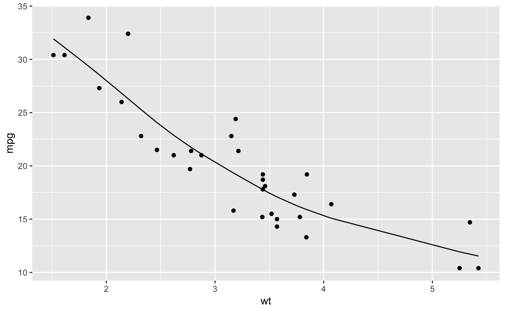

Tidy summarizes information about the components of a model. A model component might be a single term in a regression, a single hypothesis, a cluster, or a class. Exactly what tidy considers to be a model component varies cross models but is usually self-evident. If a model has several distinct types of components, you will need to specify which components to return.
# S3 method for smooth.spline augment(x, data = x$data, ...)
| x | A |
|---|---|
| data | A |
| ... | Additional arguments. Not used. Needed to match generic
signature only. Cautionary note: Misspelled arguments will be
absorbed in |
A tibble::tibble() containing the data passed to augment,
and additional columns:
The predicted response for that observation.
The residual for a particular point. Present only when
data has been passed to augment via the data argument.
augment(), stats::smooth.spline(),
stats::predict.smooth.spline()
Other smoothing spline tidiers: glance.smooth.spline
#> # A tibble: 32 x 13 #> mpg cyl disp hp drat wt qsec vs am gear carb .fitted #> * <dbl> <dbl> <dbl> <dbl> <dbl> <dbl> <dbl> <dbl> <dbl> <dbl> <dbl> <dbl> #> 1 21 6 160 110 3.9 2.62 16.5 0 1 4 4 22.9 #> 2 21 6 160 110 3.9 2.88 17.0 0 1 4 4 21.1 #> 3 22.8 4 108 93 3.85 2.32 18.6 1 1 4 1 25.3 #> 4 21.4 6 258 110 3.08 3.22 19.4 1 0 3 1 19.1 #> 5 18.7 8 360 175 3.15 3.44 17.0 0 0 3 2 17.8 #> 6 18.1 6 225 105 2.76 3.46 20.2 1 0 3 1 17.7 #> 7 14.3 8 360 245 3.21 3.57 15.8 0 0 3 4 17.1 #> 8 24.4 4 147. 62 3.69 3.19 20 1 0 4 2 19.2 #> 9 22.8 4 141. 95 3.92 3.15 22.9 1 0 4 2 19.5 #> 10 19.2 6 168. 123 3.92 3.44 18.3 1 0 4 4 17.8 #> # ... with 22 more rows, and 1 more variable: .resid <dbl>#> # A tibble: 32 x 5 #> x y w .fitted .resid #> <dbl> <dbl> <dbl> <dbl> <dbl> #> 1 2.62 21 1 22.9 -1.87 #> 2 2.88 21 1 21.1 -0.117 #> 3 2.32 22.8 1 25.3 -2.48 #> 4 3.22 21.4 1 19.1 2.33 #> 5 3.44 18.7 1 17.8 0.928 #> 6 3.46 18.1 1 17.7 0.437 #> 7 3.57 14.3 1 17.1 -2.79 #> 8 3.19 24.4 1 19.2 5.19 #> 9 3.15 22.8 1 19.5 3.35 #> 10 3.44 19.2 1 17.8 1.43 #> # ... with 22 more rowslibrary(ggplot2) ggplot(augment(spl, mtcars), aes(wt, mpg)) + geom_point() + geom_line(aes(y = .fitted))